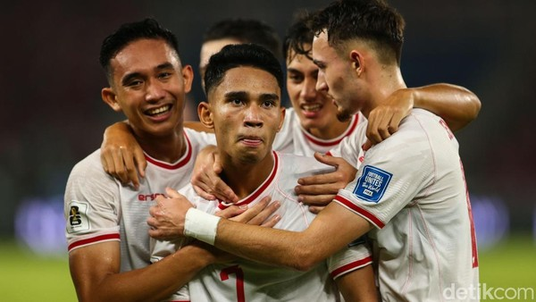

Gasak Arab Saudi 2-0, Pengamat: Ternyata Mental Timnas Indonesia Memang Harus Dihajar Dulu supaya Bangkit!!!
akhirnya meraih kemenangan perdana di putaran ketiga kualifikasi Piala Dunia 2026 zona Asia. Lawan yang dilumpuhkan...
Baca Selengkapnya